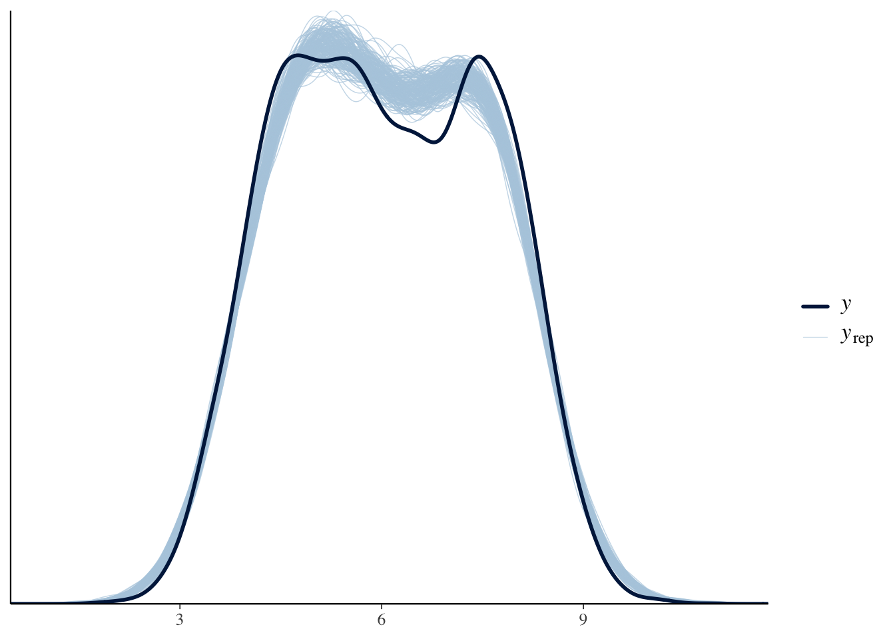
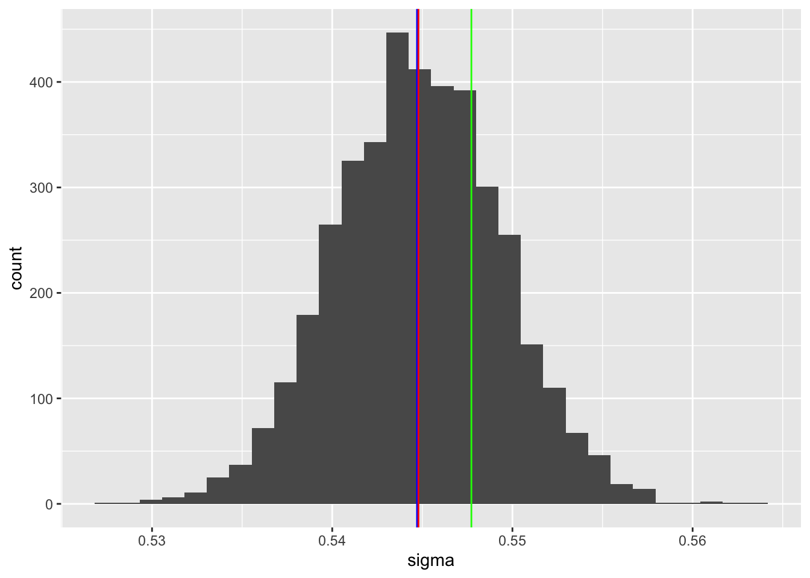
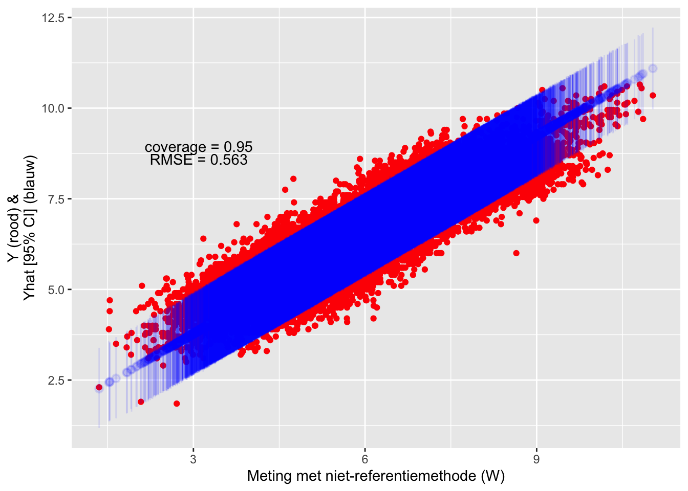

Hoofdstuk 10 Bayesiaanse regressie
10.1 Error-in-variables model
Het R package brms (Bürkner, 2025) kan ook gebruikt worden voor Bayesiaanse modellen die rekening houden met meetfouten in de predictor (Bayesian error-in-variables model). Het makkelijkst kunnen we werken met de me() functie: die functie neemt als extra argument de SD van de meetfouten in de predictor.
# ter vergelijking met de Bayesiaanse methode printen we nog eens de relatie
# Y vs. X:
(lm(pHH2O ~ pHCa, data = data_wosis_pH))##
## Call:
## lm(formula = pHH2O ~ pHCa, data = data_wosis_pH)
##
## Coefficients:
## (Intercept) pHCa
## 1.0425 0.9118##
## Call:
## lm(formula = pHH2O ~ pHCa_obs, data = data_wosis_pH)
##
## Coefficients:
## (Intercept) pHCa_obs
## 1.7455 0.7957In onze dataset hebben we de meetfout zelf gesimuleerd uit een normale verdeling met SD = \(\sqrt{0.3}\). In de praktijk zal die meestal niet gekend zijn, maar kunnen we die wel schatten op basis van de substudie met herhaalde metingen van de predictor (\(W\)). We gebruiken hiervoor een mixed-effects model:
\[W_{ij} \sim \beta_0 + b_{0i} + e_{ij}\] met random intercepts voor locaties: \(b_{0i} \sim N(0, \sigma_b^2)\) en \(e_{ij} \sim N(0, \sigma^2)\). De schatting van de residual SD \(\hat{\sigma}\) kunnen we dan in de me() functie gebruiken. In onze gesimuleerde dataset hebben we 3 replicates per locatie in de substudie, maar dit zou kunnen verschillen in de praktijk (het aantal replicates moest gelijk zijn voor gebruik in het mecor package). We fitten het model met default priors (puur als methodologische oefening, priors moeten doordacht worden in realiteit). Hieronder staat de samenvatting van het model. De Rhat waarde licht dicht genoeg bij 1, dus de MCMC-ketens zijn goed geconvergeerd. De posterior-predictive check geeft aan dat de goodness-of-fit beter zou kunnen. Figuur 10.2 geeft de posterior distributie weer voor de residual SD.
# zet de dataset in long-format
data_sub_train_long <- data_train %>%
st_drop_geometry() %>%
filter(substudy == 1) %>%
select(layer_id, pHCa_obs, pHCa_obs2, pHCa_obs3) %>%
pivot_longer(c(pHCa_obs, pHCa_obs2, pHCa_obs3),
names_to = "replicate", values_to = "pHCa_obs")
# mixed effects model
mixed_replicates <- brm(
pHCa_obs ~ 1 + (1|layer_id),
chains = 4, cores = 4,
data = data_sub_train_long,
silent = 2, refresh = 0
)## Family: gaussian
## Links: mu = identity
## Formula: pHCa_obs ~ 1 + (1 | layer_id)
## Data: data_sub_train_long (Number of observations: 10461)
## Draws: 4 chains, each with iter = 2000; warmup = 1000; thin = 1;
## total post-warmup draws = 4000
##
## Multilevel Hyperparameters:
## ~layer_id (Number of levels: 3487)
## Estimate Est.Error l-95% CI u-95% CI Rhat Bulk_ESS Tail_ESS
## sd(Intercept) 1.42 0.02 1.39 1.46 1.00 612 1195
##
## Regression Coefficients:
## Estimate Est.Error l-95% CI u-95% CI Rhat Bulk_ESS Tail_ESS
## Intercept 6.08 0.03 6.03 6.13 1.01 415 942
##
## Further Distributional Parameters:
## Estimate Est.Error l-95% CI u-95% CI Rhat Bulk_ESS Tail_ESS
## sigma 0.54 0.00 0.54 0.55 1.00 3122 3107
##
## Draws were sampled using sampling(NUTS). For each parameter, Bulk_ESS
## and Tail_ESS are effective sample size measures, and Rhat is the potential
## scale reduction factor on split chains (at convergence, Rhat = 1).# de posterior-predictive check geeft toch een lichte afwijking tussen geobserveerde en gesimuleerde waarden voor W => het model zou eigenlijk beter moeten, maar voor deze oefening houden we het hierbij
pp_check(mixed_replicates, ndraws = 200)
Figure 10.1: Posterior predictive distribution.

Figure 10.2: Posterior samples voor de SD van de residuals (blauw = posterior mediaan; rood = posterior gemiddelde; groen = waarde gebruikt in de simulatie).
We nemen het posterior gemiddelde als puntschatting voor \(\hat{\sigma}\) en gebruiken dit in de me() functie (errors-in-variables model). Let wel, deze functie kan dus geen rekening houden met de onzekerheid op \(\hat{\sigma}\) en de onzekerheid van het error-in-variables model zal dus onderschat zijn. Dit model duurt erg lang om te fitten, misschien eens kijken of er in INLA geen alternatief bestaat? Het is natuurlijk ook een erg grote dataset, dus misschien ligt het daaraan. De regression slope (mepHCa_obssdxEQsigma_mean) ligt dicht bij de waarde van \(\beta_X\) uit de volledige dataset (zie hierboven), dus de correctie voor regressie-dilutie lijkt goed te werken.
brms_me <- brm(
pHH2O ~ me(pHCa_obs, sdx = sigma_mean),
data = data_train,
chains = 4, cores = 4,
data2 = data.frame(sigma_mean = sigma_mean),
silent = 2, refresh = 0
)## Family: gaussian
## Links: mu = identity
## Formula: pHH2O ~ me(pHCa_obs, sdx = sigma_mean)
## Data: data_train (Number of observations: 34873)
## Draws: 4 chains, each with iter = 2000; warmup = 1000; thin = 1;
## total post-warmup draws = 4000
##
## Regression Coefficients:
## Estimate Est.Error l-95% CI u-95% CI Rhat Bulk_ESS
## Intercept 1.05 0.01 1.02 1.08 1.00 832
## mepHCa_obssdxEQsigma_mean 0.91 0.00 0.91 0.92 1.00 784
## Tail_ESS
## Intercept 2135
## mepHCa_obssdxEQsigma_mean 2071
##
## Further Distributional Parameters:
## Estimate Est.Error l-95% CI u-95% CI Rhat Bulk_ESS Tail_ESS
## sigma 0.28 0.00 0.27 0.28 1.01 178 349
##
## Draws were sampled using sampling(NUTS). For each parameter, Bulk_ESS
## and Tail_ESS are effective sample size measures, and Rhat is the potential
## scale reduction factor on split chains (at convergence, Rhat = 1).We evalueren nu de predicties in de test-dataset obv het errors-in-variables model. De coverage is goed, maar de RMSE ligt lichtjes hoger dan bij simpele lineaire regressie zonder correctie voor measurement error (zie figuur @ref(fig:eval_linreg1)).

Als alternatief op het gebruik van de me() functie kunnen we de methode van Frost & Thompson (2000) ook makkelijk vertalen naar een Bayesiaanse versie: uit het mixed-effects model kunnen we de ICC berekenen en deze gebruiken om de simpele lineaire regressie te corrigeren voor regressie-dilutie.
10.2 Latent-variable model
Ik heb in de literatuur ook latent-variable modellen gevonden voor het gebruik in predictors met meetfouten, maar die zijn erg moeilijk te fitten en blijken niet direct geschikt voor predicties in nieuwe datasets. Later te bekijken of het nodig is daar verder onderzoek naar te doen of niet.